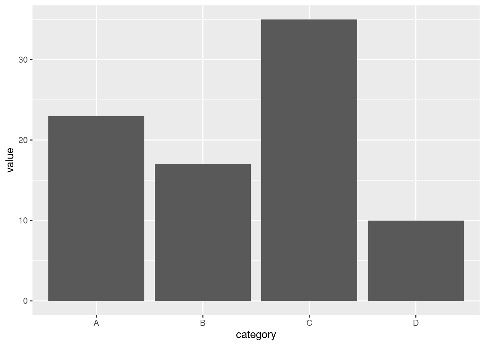

Chapter 10 Using Short Read
This library can be installed by invoking the BiocManager::install("ShortRead") command to the console.
load the library
## Loading required package: BiocParallel## Loading required package: Rsamtools## Loading required package: GenomicRanges## Loading required package: GenomicAlignments## Loading required package: SummarizedExperiment## Loading required package: MatrixGenerics## Loading required package: matrixStats##
## Attaching package: 'matrixStats'## The following object is masked from 'package:seqinr':
##
## count## The following object is masked from 'package:dplyr':
##
## count##
## Attaching package: 'MatrixGenerics'## The following objects are masked from 'package:matrixStats':
##
## colAlls, colAnyNAs, colAnys, colAvgsPerRowSet, colCollapse,
## colCounts, colCummaxs, colCummins, colCumprods, colCumsums,
## colDiffs, colIQRDiffs, colIQRs, colLogSumExps, colMadDiffs,
## colMads, colMaxs, colMeans2, colMedians, colMins, colOrderStats,
## colProds, colQuantiles, colRanges, colRanks, colSdDiffs, colSds,
## colSums2, colTabulates, colVarDiffs, colVars, colWeightedMads,
## colWeightedMeans, colWeightedMedians, colWeightedSds,
## colWeightedVars, rowAlls, rowAnyNAs, rowAnys, rowAvgsPerColSet,
## rowCollapse, rowCounts, rowCummaxs, rowCummins, rowCumprods,
## rowCumsums, rowDiffs, rowIQRDiffs, rowIQRs, rowLogSumExps,
## rowMadDiffs, rowMads, rowMaxs, rowMeans2, rowMedians, rowMins,
## rowOrderStats, rowProds, rowQuantiles, rowRanges, rowRanks,
## rowSdDiffs, rowSds, rowSums2, rowTabulates, rowVarDiffs, rowVars,
## rowWeightedMads, rowWeightedMeans, rowWeightedMedians,
## rowWeightedSds, rowWeightedVars## Loading required package: Biobase## Welcome to Bioconductor
##
## Vignettes contain introductory material; view with
## 'browseVignettes()'. To cite Bioconductor, see
## 'citation("Biobase")', and for packages 'citation("pkgname")'.##
## Attaching package: 'Biobase'## The following object is masked from 'package:MatrixGenerics':
##
## rowMedians## The following objects are masked from 'package:matrixStats':
##
## anyMissing, rowMedians##
## Attaching package: 'GenomicAlignments'## The following object is masked from 'package:data.table':
##
## last## The following object is masked from 'package:dplyr':
##
## last##
## Attaching package: 'ShortRead'## The following object is masked from 'package:data.table':
##
## tables## The following object is masked from 'package:dplyr':
##
## id- Reading the fastq sequences
## class: ShortReadQ
## length: 5 reads; width: 149..166 cycles- Preview of first 3 sequences
## class: ShortReadQ
## length: 3 reads; width: 149 161 cycles- Sequence information
## DNAStringSet object of length 5:
## width seq
## [1] 149 CGCAAGCGAGTTAAGCAGTCTGTCCAAAGCATGT...TTATCCACATCTGTCATGACGATTTCGTTTGAT
## [2] 161 CGTTATCAGAGAGCTCTTGTCGCAAGCGAGTTAA...CTACCAAGTTATCCACATCTGTCATGACGATTT
## [3] 161 AGCGAGTTAAGCAGTCTGTCCAAAGCATGTGTAT...GACGATTTCGTTTGATTTTGCCTTAAAAAGAAA
## [4] 166 GACCCCTTCTCATCAGGAAGGGTTAATCTTTAAA...TGGATTCGCCCTTTAGTAGCTGAAGAAGTAGAG
## [5] 166 CCCCTTCTCATCAGGAAGGGTTAATCTTTAAATG...GATTCGCCCTTTAGTAGCTGAAGAAGTAGAGGGSubset the sequence from second to fifth
## DNAStringSet object of length 4:
## width seq
## [1] 161 CGTTATCAGAGAGCTCTTGTCGCAAGCGAGTTAA...CTACCAAGTTATCCACATCTGTCATGACGATTT
## [2] 161 AGCGAGTTAAGCAGTCTGTCCAAAGCATGTGTAT...GACGATTTCGTTTGATTTTGCCTTAAAAAGAAA
## [3] 166 GACCCCTTCTCATCAGGAAGGGTTAATCTTTAAA...TGGATTCGCCCTTTAGTAGCTGAAGAAGTAGAG
## [4] 166 CCCCTTCTCATCAGGAAGGGTTAATCTTTAAATG...GATTCGCCCTTTAGTAGCTGAAGAAGTAGAGGGInspect the quality of the sequence
## class: FastqQuality
## quality:
## BStringSet object of length 5:
## width seq
## [1] 149 CCCC>CHDBBC<=8=DCCCDDDCB>BG?GGEDB=...C@B==8=CDDDDDDDDDC==<C@C8<<DD=BCE
## [2] 161 <CE:@C=<<=DDDCBBC><<<CDD>BCEHGI>C>...999929-39:>BE>BBA@ADEC?>?AAA999C;
## [3] 161 DDEDEEEAE@DD=>=:==BB?BG>FDEDCCBBBB...D>///99*//::4:<BBB6BD-2--555-5:::
## [4] 166 CCCLL;E@DE>>=DDDAE@EEBE@@?CCEE?EE?...BB@DDAD8884;C<CFGGE?@?C?CC=BDEEEA
## [5] 166 666/6:::=BBCCBACADD6@:D@DDEE>DD>DE...>BDAC58;6:D>DDDDGEEBB<CD@DDDEEED>- Number of sequence in the file
## [1] 5- Length of reads
## [1] 149 161 161 166 166- generating the summary of fasta sequences
## BStringSet object of length 5:
## width seq
## [1] 17 OLVOG:01110:02677
## [2] 17 OLVOG:01219:01823
## [3] 17 OLVOG:01240:02825
## [4] 17 OLVOG:02464:02160
## [5] 17 OLVOG:02703:02334## DNAStringSet object of length 5:
## width seq
## [1] 149 CGCAAGCGAGTTAAGCAGTCTGTCCAAAGCATGT...TTATCCACATCTGTCATGACGATTTCGTTTGAT
## [2] 161 CGTTATCAGAGAGCTCTTGTCGCAAGCGAGTTAA...CTACCAAGTTATCCACATCTGTCATGACGATTT
## [3] 161 AGCGAGTTAAGCAGTCTGTCCAAAGCATGTGTAT...GACGATTTCGTTTGATTTTGCCTTAAAAAGAAA
## [4] 166 GACCCCTTCTCATCAGGAAGGGTTAATCTTTAAA...TGGATTCGCCCTTTAGTAGCTGAAGAAGTAGAG
## [5] 166 CCCCTTCTCATCAGGAAGGGTTAATCTTTAAATG...GATTCGCCCTTTAGTAGCTGAAGAAGTAGAGGG- Seq length - we can generate the sequence lenght by converting it to a dataframe
## fq_reads@ranges@width
## 1 149
## 2 161
## 3 161
## 4 166
## 5 166- Quality scores
## class: FastqQuality
## quality:
## BStringSet object of length 5:
## width seq
## [1] 149 CCCC>CHDBBC<=8=DCCCDDDCB>BG?GGEDB=...C@B==8=CDDDDDDDDDC==<C@C8<<DD=BCE
## [2] 161 <CE:@C=<<=DDDCBBC><<<CDD>BCEHGI>C>...999929-39:>BE>BBA@ADEC?>?AAA999C;
## [3] 161 DDEDEEEAE@DD=>=:==BB?BG>FDEDCCBBBB...D>///99*//::4:<BBB6BD-2--555-5:::
## [4] 166 CCCLL;E@DE>>=DDDAE@EEBE@@?CCEE?EE?...BB@DDAD8884;C<CFGGE?@?C?CC=BDEEEA
## [5] 166 666/6:::=BBCCBACADD6@:D@DDEE>DD>DE...>BDAC58;6:D>DDDDGEEBB<CD@DDDEEED>Convert the scores to matrix and see as real numbers
## [,1] [,2] [,3] [,4] [,5] [,6] [,7] [,8] [,9] [,10] [,11] [,12] [,13] [,14]
## [1,] 34 34 34 34 29 34 39 35 33 33 34 27 28 23
## [2,] 27 34 36 25 31 34 28 27 27 28 35 35 35 34
## [3,] 35 35 36 35 36 36 36 32 36 31 35 35 28 29
## [4,] 34 34 34 43 43 26 36 31 35 36 29 29 28 35
## [5,] 21 21 21 14 21 25 25 25 28 33 33 34 34 33
## [,15] [,16] [,17] [,18] [,19] [,20] [,21] [,22] [,23] [,24] [,25] [,26]
## [1,] 28 35 34 34 34 35 35 35 34 33 29 33
## [2,] 33 33 34 29 27 27 27 34 35 35 29 33
## [3,] 28 25 28 28 33 33 30 33 38 29 37 35
## [4,] 35 35 32 36 31 36 36 33 36 31 31 30
## [5,] 32 34 32 35 35 21 31 25 35 31 35 35
## [,27] [,28] [,29] [,30] [,31] [,32] [,33] [,34] [,35] [,36] [,37] [,38]
## [1,] 38 30 38 38 36 35 33 28 28 28 35 36
## [2,] 34 36 39 38 40 29 34 29 34 37 28 28
## [3,] 36 35 34 34 33 33 33 33 33 34 33 25
## [4,] 34 34 36 36 30 36 36 30 35 35 27 27
## [5,] 36 36 29 35 35 29 35 36 35 35 36 30
## [,39] [,40] [,41] [,42] [,43] [,44] [,45] [,46] [,47] [,48] [,49] [,50]
## [1,] 38 38 38 26 37 34 34 34 34 34 33 34
## [2,] 29 35 34 34 32 34 23 28 28 25 28 35
## [3,] 33 35 35 35 35 35 35 34 34 28 28 28
## [4,] 21 16 25 30 25 30 33 30 34 40 37 26
## [5,] 36 36 32 36 36 31 36 36 36 26 35 36
## [,51] [,52] [,53] [,54] [,55] [,56] [,57] [,58] [,59] [,60] [,61] [,62]
## [1,] 34 30 33 33 33 25 33 36 30 37 31 35
## [2,] 35 36 36 34 33 33 33 33 33 33 33 25
## [3,] 28 21 26 34 23 32 26 23 23 18 14 25
## [4,] 33 30 30 36 36 36 36 27 20 27 35 36
## [5,] 36 36 35 35 35 28 28 28 35 35 35 26
## [,63] [,64] [,65] [,66] [,67] [,68] [,69] [,70] [,71] [,72] [,73] [,74]
## [1,] 35 36 30 35 35 28 27 27 23 27 35 28
## [2,] 33 30 30 27 28 27 25 25 34 25 25 25
## [3,] 33 25 25 25 14 15 28 21 28 27 28 21
## [4,] 36 26 35 33 34 34 35 36 35 35 35 36
## [5,] 35 34 35 35 35 36 35 35 35 37 36 36
## [,75] [,76] [,77] [,78] [,79] [,80] [,81] [,82] [,83] [,84] [,85] [,86]
## [1,] 35 35 35 26 32 19 25 18 25 23 29 26
## [2,] 25 14 25 25 14 25 26 32 32 36 30 34
## [3,] 27 9 13 9 12 16 20 8 24 25 35 35
## [4,] 35 35 30 36 32 35 35 35 35 35 35 35
## [5,] 29 36 32 35 35 35 34 35 34 36 35 35
## [,87] [,88] [,89] [,90] [,91] [,92] [,93] [,94] [,95] [,96] [,97] [,98]
## [1,] 34 35 36 37 33 33 33 34 32 37 40 38
## [2,] 34 31 30 29 14 25 25 14 25 34 34 32
## [3,] 35 35 34 35 29 34 34 33 19 31 31 24
## [4,] 35 35 35 30 34 31 35 35 35 35 35 35
## [5,] 35 30 34 31 35 35 35 35 34 34 31 36
## [,99] [,100] [,101] [,102] [,103] [,104] [,105] [,106] [,107] [,108]
## [1,] 26 34 34 35 35 30 34 35 26 32
## [2,] 34 17 24 24 13 24 17 24 28 34
## [3,] 18 12 18 18 12 17 23 17 17 12
## [4,] 32 36 35 35 35 34 34 30 34 36
## [5,] 35 35 36 35 36 28 33 33 33 33
## [,109] [,110] [,111] [,112] [,113] [,114] [,115] [,116] [,117] [,118]
## [1,] 32 25 25 25 23 28 33 35 34 31
## [2,] 33 32 33 36 36 35 36 23 26 26
## [3,] 17 16 23 23 25 32 33 33 26 21
## [4,] 35 35 35 35 35 32 33 33 35 35
## [5,] 34 32 32 32 34 34 34 35 35 28
## [,119] [,120] [,121] [,122] [,123] [,124] [,125] [,126] [,127] [,128]
## [1,] 33 28 28 23 28 34 35 35 35 35
## [2,] 26 12 24 31 30 29 24 30 29 23
## [3,] 21 24 32 35 36 33 33 33 33 33
## [4,] 35 30 34 34 35 35 35 35 29 36
## [5,] 32 33 35 33 33 33 28 33 35 35
## [,129] [,130] [,131] [,132] [,133] [,134] [,135] [,136] [,137] [,138]
## [1,] 35 35 35 35 35 34 28 28 27 34
## [2,] 24 24 24 24 17 24 12 18 24 25
## [3,] 35 29 14 14 14 24 24 9 14 14
## [4,] 35 35 34 34 33 33 33 31 35 35
## [5,] 35 35 35 33 33 29 33 35 32 34
## [,139] [,140] [,141] [,142] [,143] [,144] [,145] [,146] [,147] [,148]
## [1,] 31 34 23 27 27 35 35 28 33 34
## [2,] 29 33 36 29 33 33 32 31 32 35
## [3,] 25 25 19 25 27 33 33 33 21 33
## [4,] 32 35 23 23 23 19 26 34 27 34
## [5,] 20 23 26 21 25 35 29 35 35 35
## [,149] [,150] [,151] [,152] [,153] [,154] [,155] [,156] [,157] [,158]
## [1,] 36 NA NA NA NA NA NA NA NA NA
## [2,] 36 34 30 29 30 32 32 32 24 24
## [3,] 35 12 17 12 12 20 20 20 12 20
## [4,] 37 38 38 36 30 31 30 34 30 34
## [5,] 35 38 36 36 33 33 27 34 35 31
## [,159] [,160] [,161] [,162] [,163] [,164] [,165] [,166]
## [1,] NA NA NA NA NA NA NA NA
## [2,] 24 34 26 NA NA NA NA NA
## [3,] 25 25 25 NA NA NA NA NA
## [4,] 34 28 33 35 36 36 36 32
## [5,] 35 35 35 36 36 36 35 29- Mean score for each sequence
## [1] 32.00000 29.18012 26.57764 32.99398 32.71084- Mean score for each position
## [1] 32.00000 29.18012 26.57764 32.99398 32.71084Plot a boxplot for the scores
